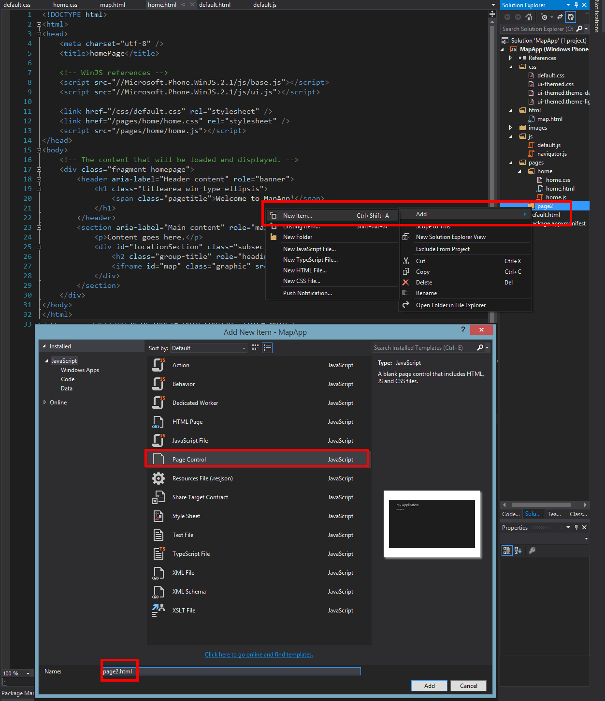
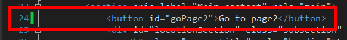
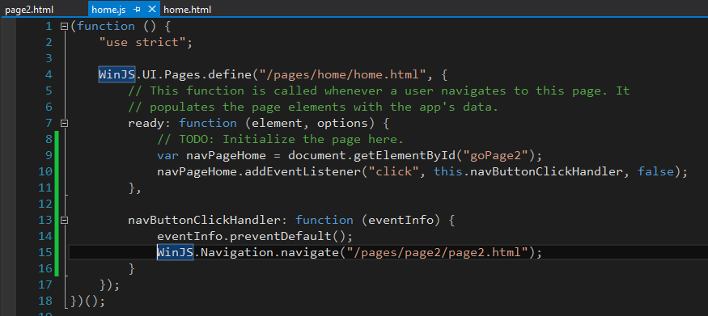
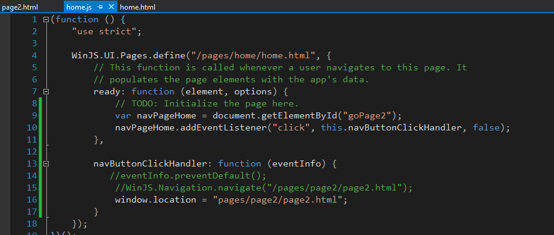
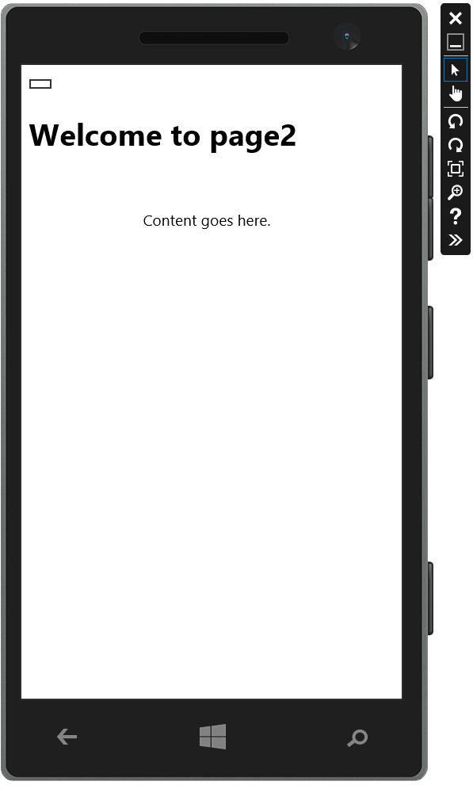

Now we have a functioning map and hopefully some of the specific Windows Phone functionality is less of a mystery. But we might want to input data on a separate page and then have the map react to it on it's own page. So how do we do that. We need to take care of two things. One we need to be able to react to a click on a button or a link. However, I would STRONGLY suggest using buttons as it makes for what I have found the implementation to be cleaner as the links when they are used actually link to an outside source and not used as a link to an outside web page or resource and to use as navigation items inside the app itself.
To do this we need to change the default behavior of the buttons and JavaScript navigation to work for the windows phone.
First add a new folder to hold all of the related files to our page. Right click on pages folder. Then select a new folder and name it page2.
Now right click on the page2 folder and click on add then New Item.
From the list of new items that pops up select Page Control and name the new Page Control page2.html. This will addd all of the items we need to control this page. The page2.html file, the page2.css and page2.js.
We are going to add a basic button and then listen for the even of a click. Then we are going to change the defualt behavior of this button to a Windows Phone navigation event with the help of those Microsoft.Phone.WinJS.2.1 libraries.
Add a button in the home.html file. We wil do it on line 24 and all we need to do is add a basic button with the following id field id="goPage2". 
Now we just have to add the code to the corresponding JavaScript file because when we made our project Visual Studio automatically created the other support files and added the references to them for us.
Open up the home.js files and add the following code so your file looks the same as the image below. The image below show the entire contents of the home.js file. Nothing is left out. This is the way I recommend always navigating as it seems to be flexible to add more buttons and navigation and works very smoothly. It is also easy to add more funtionality into the functions as from this point on it is like using JavaScript in a web page which is the whole purpose of using JavaScript for the Windows Phone in the first place.
I am glad you asked because now I get to vent about what was making me so frustrate for a long time trying to figure this out. If you don't stop the default behavior and use the Windows Libraries for their phone and say you try to use the following code . . .
You can see I commented out the lines 14 and 15 and then added a bit of code @Line 16 which is the regular code we would use for a page redirect or navigation in a basic web page.
But when you do this in the Windows Phone Enviornment then you get this output on the Emulator . . .
